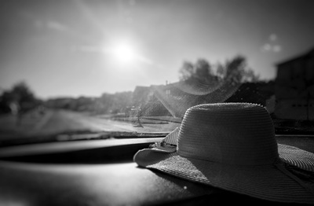
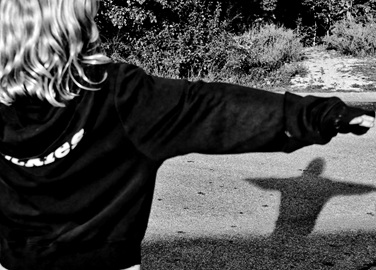
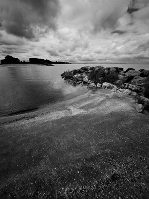
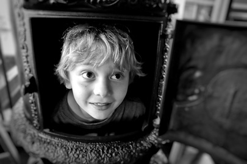
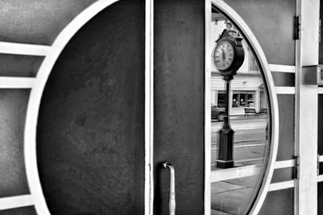
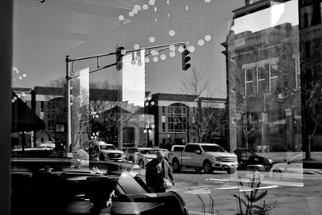

"Your first one-thousand photographs are your worst."
- Henri Cartier-Bresson


"Photography takes an instant out of time, altering life by holding it still."
- Dorothea Lange

"The best thing about a picture is that it never changes, even when the people
in it do."
- Andy Warhol

"Wherever there is light, one can photograph."
- Alfred Stieglitz

"The two most engaging powers of a photograph are to make new things familiar, and
familiar things new."
- William Thackeray